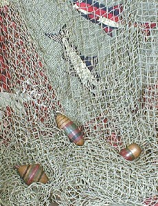
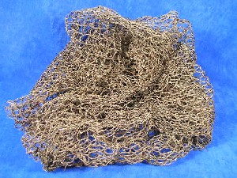
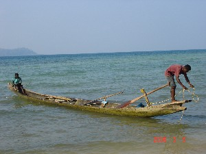

hunting & gathering
ɑrɑːʈɔːlɔ आराऽटौऽलौ MORPH: ɑrɑː-ʈɔːlɔ. VAR: ɑrɑʈɔlo अराटौलो. N सं. nock end, of arrow; भाले का कोना; तीर का पिछला भाग. SD: hunting & gathering, शिकार एवं संचय सम्बंधी, tool, औज़ार.
ɑrɛo आरैओ N सं. arrowhead of the spear; भाले की नोक. SD: tool, औज़ार, hunting & gathering, शिकार एवं संचय सम्बंधी.
ɑrɛːwtɑrɑːbɑʈ आरैऽवताराऽबाट MORPH: ɑrɛːw-tɑrɑː-bɑʈ. N सं. blade of arrow; तीर का फाल. SD: hunting & gathering, शिकार एवं संचय सम्बंधी.
ɑrɔːmotʰo आरौऽमोथो N सं. a kind of big basket; एक प्रकार की बड़ी टोकरी. SD: hunting & gathering, शिकार एवं संचय सम्बंधी.
bɔro2 बौरो N सं. handle and frame of fishing net; मछली के जाल का मूठ व ढांचा. SD: hunting & gathering, शिकार एवं संचय सम्बंधी. SEE: bɔro1 ‘among’ ‘में बौरोhm:{1}’.
cɑkʰoe चाखोए N सं. platform; मचान. SD: hunting & gathering, शिकार एवं संचय सम्बंधी. SEE: ʈʰicɑ ‘rack; platform; stage’ ‘रैक; चबूतरा; मंच ठीचा ’.
cɑotʰɔmo1 चाओथौमो N सं. bait; चारा. SD: hunting & gathering, शिकार एवं संचय सम्बंधी. SEE: cɑotʰɔmo2 ‘meat, rotten’ ‘मांस, सड़ा हुआ चाओथौमोhm:{2}’.
 ceo चेओ VAR: cɛo चैओ. N सं. knife; चाकू.
ceo चेओ VAR: cɛo चैओ. N सं. knife; चाकू.  ɑtʰirenu ceotɑ konɑbit beliŋo आथीरेनू चेओता कोनाबीत बेलीङो. The child cut the Tendu fruit with a knife. बच्चे ने चाकू से तेंदूफल काटा।. SD: hunting & gathering, शिकार एवं संचय सम्बंधी. SEE: pʰɔrcɛɔ ‘instrument, small’ ‘दाओ, छोटा फौरचैऔ ’.
ɑtʰirenu ceotɑ konɑbit beliŋo आथीरेनू चेओता कोनाबीत बेलीङो. The child cut the Tendu fruit with a knife. बच्चे ने चाकू से तेंदूफल काटा।. SD: hunting & gathering, शिकार एवं संचय सम्बंधी. SEE: pʰɔrcɛɔ ‘instrument, small’ ‘दाओ, छोटा फौरचैऔ ’.
cɛlmo चैलमो N सं. stem, of an arrow; तीर का डंडा. SD: hunting & gathering, शिकार एवं संचय सम्बंधी.
cokbione चोकबीओने MORPH: cokbi-one. VAR: cɔkbi-one चौक्बीओने. N सं. turtle oil; कछुए का तेल. SD: hunting & gathering, शिकार एवं संचय सम्बंधी.
 cɔm3 चौम VAR: com चोम. N सं. an instrument used for taking out the eyes of a turtle; needle; chopsticks; कछुए की आंख निकालने के लिए एक औज़ार; सुई; चौपस्टिक्स.
cɔm3 चौम VAR: com चोम. N सं. an instrument used for taking out the eyes of a turtle; needle; chopsticks; कछुए की आंख निकालने के लिए एक औज़ार; सुई; चौपस्टिक्स.  cɔm-tɑ-o-u-ijji चौमताओऊईज्जी. (He) eats with chopsticks. (वह) चौपस्टिक्स से खा रहा है।. SD: tool, औज़ार, hunting & gathering, शिकार एवं संचय सम्बंधी. SEE: cɔm1 ‘basket’ ‘टोकरी चौमhm:{1}’; cɔm2 ‘betel-nut’ ‘सुपारी चौमhm:{2}’; cɔm4 ‘shark, small’ ‘शार्क, छोटी चौमhm:{4}’; cɔm5 ‘stick, wooden’ ‘छड़, लकड़ी की चौमhm:{5}’; cɔm6 ‘tree’ ‘पेड़ चौमhm:{6}’.
cɔm-tɑ-o-u-ijji चौमताओऊईज्जी. (He) eats with chopsticks. (वह) चौपस्टिक्स से खा रहा है।. SD: tool, औज़ार, hunting & gathering, शिकार एवं संचय सम्बंधी. SEE: cɔm1 ‘basket’ ‘टोकरी चौमhm:{1}’; cɔm2 ‘betel-nut’ ‘सुपारी चौमhm:{2}’; cɔm4 ‘shark, small’ ‘शार्क, छोटी चौमhm:{4}’; cɔm5 ‘stick, wooden’ ‘छड़, लकड़ी की चौमhm:{5}’; cɔm6 ‘tree’ ‘पेड़ चौमhm:{6}’.
cɔm5 चौम N सं. The wooden stick used to pierce pig’s body when it is roasted; लकड़ी की छड़ जिसे सूअर के शरीर में घुसाकर भूना जाता है ।. SD: tool, औज़ार, hunting & gathering, शिकार एवं संचय सम्बंधी. SEE: cɔm1 ‘basket’ ‘टोकरी चौमhm:{1}’; cɔm2 ‘betel-nut’ ‘सुपारी चौमhm:{2}’; cɔm3 ‘pointed object, any’ ‘नुकीला औज़ार, कोई भी चौमhm:{3}’; cɔm4 ‘shark, small’ ‘शार्क, छोटी चौमhm:{4}’; cɔm6 ‘tree’ ‘पेड़ चौमhm:{6}’.
 cɔp4 चौप VAR: cop चोप. N सं. weight fixed at the end of a fishing line; मछली पकड़ने के कांटे के सिरे पर लगा वज़न. SD: tool, औज़ार, hunting & gathering, शिकार एवं संचय सम्बंधी. SEE: cɔp1 ‘fish’ ‘मछली चौपhm:{1}’; cɔp2 ‘fish’ ‘मछली चौपhm:{2}’; cɔp3 ‘tree’ ‘पेड़ चौपhm:{3}’.
cɔp4 चौप VAR: cop चोप. N सं. weight fixed at the end of a fishing line; मछली पकड़ने के कांटे के सिरे पर लगा वज़न. SD: tool, औज़ार, hunting & gathering, शिकार एवं संचय सम्बंधी. SEE: cɔp1 ‘fish’ ‘मछली चौपhm:{1}’; cɔp2 ‘fish’ ‘मछली चौपhm:{2}’; cɔp3 ‘tree’ ‘पेड़ चौपhm:{3}’.
ekbiʈʰunrɛo एक्बीठून्रैओ MORPH: ek-biʈʰun-rɛo. N सं. spearhead with one hook; भाले की नुकीली नोक. SD: hunting & gathering, शिकार एवं संचय सम्बंधी.
 eːn एऽन N सं. leaf of a bushy plant; एक तरह की झाड़ी का पत्ता. SD: flora, फूल-पत्ती, hunting & gathering, शिकार एवं संचय सम्बंधी. NT: These leaves are strewn in the water to make fish senseless. Many of these bushes were destroyed in the tsunami. इस पत्ते का चूरा पानी में डाला जाता है जिससे मछलियां बेहोश होकर ऊपर तैर आती हैं। सूनामी में एऽन की झाड़ियों को काफ़ी नुकसान पहुंचा।. SEE: jin ‘tree’ ‘पेड़ जीन ’.
eːn एऽन N सं. leaf of a bushy plant; एक तरह की झाड़ी का पत्ता. SD: flora, फूल-पत्ती, hunting & gathering, शिकार एवं संचय सम्बंधी. NT: These leaves are strewn in the water to make fish senseless. Many of these bushes were destroyed in the tsunami. इस पत्ते का चूरा पानी में डाला जाता है जिससे मछलियां बेहोश होकर ऊपर तैर आती हैं। सूनामी में एऽन की झाड़ियों को काफ़ी नुकसान पहुंचा।. SEE: jin ‘tree’ ‘पेड़ जीन ’.
erɑboroːʈ एराबोरोऽट VAR: erɑːborɑːʈ एराऽबोराऽट. N सं. back end of a spear used for hunting turtles; कछुए का शिकार करने वाले भाले का पिछला सिरा. SD: hunting & gathering, शिकार एवं संचय सम्बंधी.
erɑkʰume एराखूमे MORPH: erɑ-kʰume. VAR: erɑː-xume एराऽखूमे. N सं. back of bow; धनुष का पिछला सिरा. SD: hunting & gathering, शिकार एवं संचय सम्बंधी.
erɑːʈɔwlɔ एराऽटौवलौ N सं. middle string of the bow; धनुष का बीच वाला धागा. SD: hunting & gathering, शिकार एवं संचय सम्बंधी.
ereʈɑmo एरेटामो N सं. good hunter; अच्छा शिकारी. SD: people, लोग, hunting & gathering, शिकार एवं संचय सम्बंधी.
erjukʰu एरजूखू MORPH: er-jukʰu. N सं. tip, of an arrow; भाले की नोक. SD: hunting & gathering, शिकार एवं संचय सम्बंधी.
erlɔcɔŋ एरलौचौङ MORPH: er-lɔ-cɔŋ. N सं. tip or sharpness of an arrow; भाले की नोक. SD: hunting & gathering, शिकार एवं संचय सम्बंधी.
erteːk एरतेऽक MORPH: er-teːk. N सं. middle portion of hunting bamboo; शिकार करने वाले बांस के बीच का भाग. SD: hunting & gathering, शिकार एवं संचय सम्बंधी.
etrɑːxo एत्राऽखो N सं. edge, of a bow; धनुष का किनारा. SD: hunting & gathering, शिकार एवं संचय सम्बंधी.
ɛrlɔcɔŋ2 ऐरलौचौङ N सं. point of an arrow; तीर की नोक. SD: hunting & gathering, शिकार एवं संचय सम्बंधी. SEE: ɛrlɔcɔŋ1 ‘horn’ ‘सींग ऐरलौचौङhm:{1}’.
ɛrmɛ ऐरमै N सं. bowstring; धनुष की डोर. SD: hunting & gathering, शिकार एवं संचय सम्बंधी.
ɛrsolok ऐरसोलोक MORPH: ɛr-solok. VAR: ɛr-colok ऐरचोलोक; ɛr-šolok ऐरशोलोक. N सं. loop; फंदा. SD: hunting & gathering, शिकार एवं संचय सम्बंधी.
fɑɽeʈɔŋ फाड़ेटौङ MORPH: fɑɽe-ʈɔŋ. N सं. wood used to make sacks; लकड़ी बोरी बनाने में प्रयुक्त. SD: hunting & gathering, शिकार एवं संचय सम्बंधी.
fɛc फैच N सं. vessel; बर्तन. SD: hunting & gathering, शिकार एवं संचय सम्बंधी.
ɸotɑle फोताले VAR: poːttɑle पोऽत्ताले; fɔtɔle फौतौले. N सं. a big long arrow used for hunting pigs; सूअर का शिकार करने वाला एक लम्बा बड़ा तीर. SD: hunting & gathering, शिकार एवं संचय सम्बंधी. SEE: uro ‘rope (of a harpoon arrow)’ ‘रस्सी (हारपून भाले की) ऊरो ’.
ilpʰe1 ईलफे VAR: ile ईले. ADJ वि. one who returns from hunting; वह जो शिकार से लौटकर आता है. SD: hunting & gathering, शिकार एवं संचय सम्बंधी, people, लोग. SEE: ilpʰe2 ‘show ignorance; be indifferent; pretend’ ‘अनजान बनना ईलफेhm:{2}’.
irfiːle ईरफीले N सं. edge, of a weapon; हथियार का किनारा. SD: hunting & gathering, शिकार एवं संचय सम्बंधी.
irjuxu ईरजूख़ू MORPH: ir-juxu. N सं. edge, of an arrow; तीर का कोना. SD: hunting & gathering, शिकार एवं संचय सम्बंधी.
irxume ईरखूमे MORPH: ir-xume. N सं. front portion, of a bow; धनुष का अग्रभाग. SD: hunting & gathering, शिकार एवं संचय सम्बंधी.
itbitʰum ईत्बीथूम MORPH: it-bitʰum. N सं. hook of the fishing arrow; मछली पकड़ने वाले तीर का कांटा. SD: hunting & gathering, शिकार एवं संचय सम्बंधी.
jirmu जीरमू N सं. mythic cow-like animal; गाय जैसा एक पौराणिक जानवर. SD: mythology, पौराणिक, hunting & gathering, शिकार एवं संचय सम्बंधी. NT: A mythical inhabitant of Mayabander, North Andaman. It was supposed to be as big as a cow. It was supposed to have sticky hair, because of which anyone who touched it would get stuck to it. It was supposed to produce the tinkle of bells when it walked. ऐसा माना जाता है कि गाय के आकार जैसा इस विशाल जानवर के तन पर चिपचिपे बाल होते थे जिसकी वजह से इसको छूनेवाला इससे चिपक जाता था। इस उत्तरी अण्डमान के मायाबंदर स्थान पर पाये जाने वाले पौराणिक जानवर के चलने से घण्टियों की ध्वनि होती थी।.
 kɑliu1 कालीऊ Etym: Jeru; Sare; जेरू; सारे. N सं. fishing harpoon; मछली मारने का भाला. SD: tool, औज़ार, hunting & gathering, शिकार एवं संचय सम्बंधी. SEE: kɑliu2 ‘mynah’ ‘मैना कालीऊhm:{2}’.
kɑliu1 कालीऊ Etym: Jeru; Sare; जेरू; सारे. N सं. fishing harpoon; मछली मारने का भाला. SD: tool, औज़ार, hunting & gathering, शिकार एवं संचय सम्बंधी. SEE: kɑliu2 ‘mynah’ ‘मैना कालीऊhm:{2}’.
 kerɑle केराले N सं. middle of a log of a boat; नाव के बीच का हिस्सा. SD: boat related, नाव सम्बंधी, hunting & gathering, शिकार एवं संचय सम्बंधी.
kerɑle केराले N सं. middle of a log of a boat; नाव के बीच का हिस्सा. SD: boat related, नाव सम्बंधी, hunting & gathering, शिकार एवं संचय सम्बंधी.
 kɛʈmo1 कैटमो N सं. bowstring made of the Pharako creeper; फाराको बेल से बनी धनुष की डोर. SD: hunting & gathering, शिकार एवं संचय सम्बंधी, tool, औज़ार. SEE: kɛʈmo2 ‘thread’ ‘धागा कैटमोhm:{2}’.
kɛʈmo1 कैटमो N सं. bowstring made of the Pharako creeper; फाराको बेल से बनी धनुष की डोर. SD: hunting & gathering, शिकार एवं संचय सम्बंधी, tool, औज़ार. SEE: kɛʈmo2 ‘thread’ ‘धागा कैटमोhm:{2}’.
kɛʈmo2 कैटमो N सं. thread made from the bark of the Pharako creeper; फाराको पेड़ की छाल से बना धागा. SD: hunting & gathering, शिकार एवं संचय सम्बंधी. SEE: kɛʈmo1 ‘bowstring’ ‘धनुष की डोर कैटमोhm:{1}’.
kʰino1 खीनो N सं. rope; रस्सी. kʰinobɑle खीनोबाले. strong rope. मज़बूत रस्सी. SD: hunting & gathering, शिकार एवं संचय सम्बंधी. SEE: kʰino2 ‘trap’ ‘फंदा खीनोhm:{2}’.
kʰino2 खीनो N सं. animal trap; जानवर को पकड़ने के लिये फंदा. SD: tool, औज़ार, hunting & gathering, शिकार एवं संचय सम्बंधी. SEE: kʰino1 ‘rope’ ‘रस्सी खीनोhm:{1}’.
 ko को VAR: kɔw कौव. N सं. bow; धनुष. peje iso ko tɑ ɑ jirɑke iso ko nɔl be पेजे ईसो को ता आ जीराके ईसो को नौल बे. Peje’s bow is better than that of Jirake. पेजे का धनुष जीराके के धनुष से अच्छा है।. SD: hunting & gathering, शिकार एवं संचय सम्बंधी.
ko को VAR: kɔw कौव. N सं. bow; धनुष. peje iso ko tɑ ɑ jirɑke iso ko nɔl be पेजे ईसो को ता आ जीराके ईसो को नौल बे. Peje’s bow is better than that of Jirake. पेजे का धनुष जीराके के धनुष से अच्छा है।. SD: hunting & gathering, शिकार एवं संचय सम्बंधी.
koːbɑlo कोऽबालो VAR: kobɑlo कोबालो. N सं. bowstring; धनुष की डोर. SD: hunting & gathering, शिकार एवं संचय सम्बंधी.
kototsolok कोतोतसोलोक MORPH: ko-tot-solok. VAR: ko-tot-šolok को-तोत-शोलोक. N सं. loop, of the bow; धनुष का फंदा. SD: hunting & gathering, शिकार एवं संचय सम्बंधी.
kɔrɔɲone कौरौञोने MORPH: kɔrɔɲ-one. N सं. oil, of dugong; डूगोंग का तेल. SD: hunting & gathering, शिकार एवं संचय सम्बंधी, edible item, खाद्य सामग्री.
leišɑr लेईशार VAR: lešɑr लेशार; lɛsɑr लैसार. N सं. time for hunting, especially dugong, turtle, etc; शिकार का समय (ख़ासकर डूगोंग, कछुए आदि का). SD: hunting & gathering, शिकार एवं संचय सम्बंधी. SEE: leišɑr1 ‘full dark moon; darkness’ ‘अमावस; अंधेरा लेईशारhm:{1}’.
 lɛc लैच VAR: vɛːc वैऽच; lʷec ल्वेच; βɛc बैच. N सं. a small arrow to catch fish or crab; मछली या केकड़ा मारने का छोटा तीर. SD: tool, औज़ार, hunting & gathering, शिकार एवं संचय सम्बंधी.
lɛc लैच VAR: vɛːc वैऽच; lʷec ल्वेच; βɛc बैच. N सं. a small arrow to catch fish or crab; मछली या केकड़ा मारने का छोटा तीर. SD: tool, औज़ार, hunting & gathering, शिकार एवं संचय सम्बंधी.
lɛctɑrɑʈʰomo लैचताराठोमो MORPH: lɛc-tɑrɑ-ʈʰomo. N सं. quiver; तरकस. SD: hunting & gathering, शिकार एवं संचय सम्बंधी.
lɛcʈɔe लैचटौए MORPH: lɛc-ʈɔe. VAR: lɛc-ʈɔy लैच्टौय. N सं. arrow, wooden; wood used to make arrows; लकड़ी का तीर; लकड़ी तीर बनाने में प्रयुक्त. SD: tool, औज़ार, hunting & gathering, शिकार एवं संचय सम्बंधी.
 |
licɔ लीचौ N सं. hand-held fishing net; हाथ से मछली पकड़ने का जाल. SD: hunting & gathering, शिकार एवं संचय सम्बंधी.
 luremo लूरेमो VAR: lureːmo लूरेऽमो; lʷuremu ल्वूरेमू; luɽemu लूड़ेमू. Etym: Khora; खोरा. N सं. rope; रस्सी. SD: hunting & gathering, शिकार एवं संचय सम्बंधी. NT: This rope is used for killing dugong and turtle. ख़ास प्रकार की रस्सी जो डूगोंग और कछुए का शिकार करने में प्रयुक्त होती है।.
luremo लूरेमो VAR: lureːmo लूरेऽमो; lʷuremu ल्वूरेमू; luɽemu लूड़ेमू. Etym: Khora; खोरा. N सं. rope; रस्सी. SD: hunting & gathering, शिकार एवं संचय सम्बंधी. NT: This rope is used for killing dugong and turtle. ख़ास प्रकार की रस्सी जो डूगोंग और कछुए का शिकार करने में प्रयुक्त होती है।.
 |
mɑlɑrɛo मालारैओ VAR: mɑrɑreɔ मारारेऔ. Etym: Jeru; जेरू. N सं. spear used to kill fish; harpoon; मछली मारने का भाला. SD: tool, औज़ार, hunting & gathering, शिकार एवं संचय सम्बंधी.
nɔ नौ N सं. a kind of wooden spear; एक प्रकार का लकड़ी का भाला. SD: tool, औज़ार, hunting & gathering, शिकार एवं संचय सम्बंधी.
ɲo1 ञो VAR: ɲyo ञ्यो; ɲeo ञेओ; ɲyoː ञ्योऽ; ot-ɲyo ओत्ञ्यो. N सं. camp; डेरा. SD: hunting & gathering, शिकार एवं संचय सम्बंधी. SEE: ɲo2 ‘house’ ‘घर ञोhm:{2}’.
 |
 oco ओचो VAR: ocɔ ओचौ; oːcɔ ओऽचौ; ɔco औचो; ɔcɔ औचौ. N सं. net (fishing); मछली पकड़ने का जाल. o-tɑjiyocɔrer lotopʰolɔ ecul ocɔtɑ ipʰu kʰudi ओताजीयोचौरेर लोतोफोलौ एचूल ओचौता ईफू खूदी. They did not catch the fish since they did not have a net. उनके पास जाल न होने की वजह से वे मछली नहीं पकड़ पाए।. SD: hunting & gathering, शिकार एवं संचय सम्बंधी.
oco ओचो VAR: ocɔ ओचौ; oːcɔ ओऽचौ; ɔco औचो; ɔcɔ औचौ. N सं. net (fishing); मछली पकड़ने का जाल. o-tɑjiyocɔrer lotopʰolɔ ecul ocɔtɑ ipʰu kʰudi ओताजीयोचौरेर लोतोफोलौ एचूल ओचौता ईफू खूदी. They did not catch the fish since they did not have a net. उनके पास जाल न होने की वजह से वे मछली नहीं पकड़ पाए।. SD: hunting & gathering, शिकार एवं संचय सम्बंधी.
otbitʰum ओतबीथूम MORPH: ot-bitʰum. N सं. arrowhead of turtle hunting spear; कछुए का शिकार करने वाले भाले की नोक. SD: tool, औज़ार, hunting & gathering, शिकार एवं संचय सम्बंधी.
pɑl पाल N सं. canoe; the dongi; एक प्रकार की नाव, डोंगी. SD: boat related, नाव सम्बंधी, hunting & gathering, शिकार एवं संचय सम्बंधी.
peco पेचो N सं. sharp sword; तेज़ तलवार. SD: hunting & gathering, शिकार एवं संचय सम्बंधी.
pʰeue फेऊए N सं. phosphorescence used for turtle hunting; कछुए के शिकार में प्रयोग की जाने वाली धूप की मशाल. SD: hunting & gathering, शिकार एवं संचय सम्बंधी.
pʰorɔo फोरौओ N सं. one who is a good hunter; अच्छा शिकारी. SD: people, लोग, hunting & gathering, शिकार एवं संचय सम्बंधी.
puroː पूरोऽ N सं. whetstone; धार बनाने वाला पत्थर. SD: tool, औज़ार, hunting & gathering, शिकार एवं संचय सम्बंधी.
reo रेओ VAR: reɔ रेऔ. Etym: Bo. N सं. turtle-hunting spear; iron clasp tied with a rope to hunt turtle; कछुए का शिकार करने के लिए भाला; लोहे का बकसल जो रस्सी से बांधकर कछुए के शिकार में प्रयोग होता है. reɔ tot ibitʰuŋ रेऔ तोत ईबीथूङ. hook of the turtle-hunting spear. रेऔ का कांटा. SD: hunting & gathering, शिकार एवं संचय सम्बंधी.
reɔʈɔe1 रेऔटौए MORPH: reɔ-ʈɔe. VAR: reɔ-ʈoi रेऔटोई. N सं. shaft of spear; भाले का डंडा. SD: hunting & gathering, शिकार एवं संचय सम्बंधी. SEE: reɔʈɔe2 ‘saw’ ‘आरी रेऔटौएhm:{2}’.
rɛobol रैओबोल MORPH: rɛo-bol. N सं. rope attached to a spear; भाले से लगी रस्सी. SD: tool, औज़ार, hunting & gathering, शिकार एवं संचय सम्बंधी.
rɛoʈɔy रैओटौय MORPH: rɛo-ʈɔy. N सं. iron; लोहा. SD: hunting & gathering, शिकार एवं संचय सम्बंधी.
 |
roɑtɑrɑcɔme रोआताराचौमे MORPH: roɑ-tɑrɑ-cɔme. Etym: Jeru; जेरू. N सं. rear, of the boat; नाव का पिछला सिरा. SD: boat related, नाव सम्बंधी, hunting & gathering, शिकार एवं संचय सम्बंधी.
roːɔ रोऽऔ N सं. canoe; dongi, a kind of boat; डोंगी, एक प्रकार की नाव. SD: boat related, नाव सम्बंधी, hunting & gathering, शिकार एवं संचय सम्बंधी.
 rɔːwɔ रौऽवौ VAR: ruɔ रूऔ; ɽoɔ ड़ोऔ. N सं. boat; canoe; dongi; नाव; नाव; डोंगी. SD: boat related, नाव सम्बंधी, hunting & gathering, शिकार एवं संचय सम्बंधी.
rɔːwɔ रौऽवौ VAR: ruɔ रूऔ; ɽoɔ ड़ोऔ. N सं. boat; canoe; dongi; नाव; नाव; डोंगी. SD: boat related, नाव सम्बंधी, hunting & gathering, शिकार एवं संचय सम्बंधी.
šiʈbom शिटबोम VAR: cʰiʈbo छिट्बो. N सं. hunt; शिकार. SD: hunting & gathering, शिकार एवं संचय सम्बंधी.
 |
 ʈʰel ठेल VAR: tʰel थेल. N सं. bamboo of outrigger hanging in the water; पानी में लटकता हुआ उलण्डी के बांस का टुकड़ा. SD: boat related, नाव सम्बंधी, hunting & gathering, शिकार एवं संचय सम्बंधी. SEE: boyɑ ‘outrigger’ ‘उलण्डी बोया ’; cɔŋɔ ‘outrigger’ ‘बोया चौञौ ’; cɔrɔkʰ2 ‘horizontal bars of outrigger’ ‘बोया की आड़ी डंडियां चौरौखhm:{2}’; kʰuduli ‘outrigger’ ‘बोया खूदूली ’.
ʈʰel ठेल VAR: tʰel थेल. N सं. bamboo of outrigger hanging in the water; पानी में लटकता हुआ उलण्डी के बांस का टुकड़ा. SD: boat related, नाव सम्बंधी, hunting & gathering, शिकार एवं संचय सम्बंधी. SEE: boyɑ ‘outrigger’ ‘उलण्डी बोया ’; cɔŋɔ ‘outrigger’ ‘बोया चौञौ ’; cɔrɔkʰ2 ‘horizontal bars of outrigger’ ‘बोया की आड़ी डंडियां चौरौखhm:{2}’; kʰuduli ‘outrigger’ ‘बोया खूदूली ’.
ʈɛo टैओ N सं. arrow point, resembling nail of the turtle spear; कछुए का शिकार करने वाले भाले की नोक. SD: tool, औज़ार, hunting & gathering, शिकार एवं संचय सम्बंधी.
ʈʰicɑ ठीचा N सं. rack; platform; stage; रैक; चबूतरा; मंच. SD: hunting & gathering, शिकार एवं संचय सम्बंधी.
 ʈo1 टो N सं. bamboo, thick, tall, used for hunting turtle; लंबा, मोटा बांस जिससे कछुए का शिकार किया जाता है. SD: flora, फूल-पत्ती, hunting & gathering, शिकार एवं संचय सम्बंधी. SEE: ʈo2 ‘spear’ ‘भाला टोhm:{2}’.
ʈo1 टो N सं. bamboo, thick, tall, used for hunting turtle; लंबा, मोटा बांस जिससे कछुए का शिकार किया जाता है. SD: flora, फूल-पत्ती, hunting & gathering, शिकार एवं संचय सम्बंधी. SEE: ʈo2 ‘spear’ ‘भाला टोhm:{2}’.
ʈo2 टो N सं. spear made of bamboo to kill turtle; कछुआ मारने वाला बांस का भाला. SD: hunting & gathering, शिकार एवं संचय सम्बंधी. SEE: ʈo1 ‘bamboo’ ‘बांस टोhm:{1}’.
 ʈobol टोबोल VAR: ʈoːbol टोऽबोल. N सं. spear used to kill pig, dugong and crocodile; सूअर, डूगोंग, और मगरमच्छ मारने वाला भाला. SD: tool, औज़ार, hunting & gathering, शिकार एवं संचय सम्बंधी.
ʈobol टोबोल VAR: ʈoːbol टोऽबोल. N सं. spear used to kill pig, dugong and crocodile; सूअर, डूगोंग, और मगरमच्छ मारने वाला भाला. SD: tool, औज़ार, hunting & gathering, शिकार एवं संचय सम्बंधी.
ʈoxotɑːycow टोखोताऽयचोव N सं. raft; लट्ठों का बेड़ा या शहतीर. SD: boat related, नाव सम्बंधी, hunting & gathering, शिकार एवं संचय सम्बंधी.
ʈɔkʰot टौखोत N सं. long wood; long bamboo; log; लकड़ी; बांस; लट्ठे. ʈʰibišerebɑy-ʈɔkʰot ठीबीशेरेबायटौखोत. beat the earth with sticks. धरती को छड़ी से मारना. SD: tool, औज़ार, flora, फूल-पत्ती, hunting & gathering, शिकार एवं संचय सम्बंधी. NT: Earlier, this kind of wood or piece of bamboo was used to dig tubers. प्राचीन काल में कन्द-मूल खोदने में प्रयुक्त।.
ʈɔlɔm टौलौम N सं. wax of comb used for strengthening bowstring; छत्ते का मोम जिससे धनुष की डोरी मजबूत की जाती है. SD: hunting & gathering, शिकार एवं संचय सम्बंधी.
ʈʰumelbec ठूमेल्बेच MORPH: ʈʰumel-bec. VAR: ʈʰumel bɛc ठूमेल बैच. N सं. white portion, of the honeycomb where the honey is stored; मधुकोष का वह सफ़ेद भाग जहां शहद होता है. SD: hunting & gathering, शिकार एवं संचय सम्बंधी.
 ʈʰumelone ठूमेलोने VAR: ʈʰumelɔne ठूमेलौने. N सं. honey; मधु; शहद. SD: edible item, खाद्य सामग्री, hunting & gathering, शिकार एवं संचय सम्बंधी.
ʈʰumelone ठूमेलोने VAR: ʈʰumelɔne ठूमेलौने. N सं. honey; मधु; शहद. SD: edible item, खाद्य सामग्री, hunting & gathering, शिकार एवं संचय सम्बंधी.
ulluːy ऊल्लूऽय N सं. whistle, used while hunting; सीटी. SD: hunting & gathering, शिकार एवं संचय सम्बंधी.
 uro ऊरो Etym: Bo. VAR: uɽo ऊड़ो. Etym: Khora. N सं. rope of a harpoon arrow; हारपून भाले की रस्सी. SD: hunting & gathering, शिकार एवं संचय सम्बंधी. NT: Used for hunting pigs. जंगली सूअर का शिकार करने में प्रयुक्त।. SEE: ɸotɑle ‘arrow’ ‘तीर फोताले ’.
uro ऊरो Etym: Bo. VAR: uɽo ऊड़ो. Etym: Khora. N सं. rope of a harpoon arrow; हारपून भाले की रस्सी. SD: hunting & gathering, शिकार एवं संचय सम्बंधी. NT: Used for hunting pigs. जंगली सूअर का शिकार करने में प्रयुक्त।. SEE: ɸotɑle ‘arrow’ ‘तीर फोताले ’.
uroʈɔe1 ऊरोटौए N सं. thick, wooden body of a big arrow; लकड़ी के बड़े भाले का मोटा ढांचा. SD: hunting & gathering, शिकार एवं संचय सम्बंधी. SEE: uroʈɔe2 ‘old times; ancient times’ ‘पुराना ज़माना; पुराने ज़माने ऊरोटौएhm:{2}’.
utbeːlɔ ऊत्बेऽलौ MORPH: ut-beːlɔ. N सं. wooden plank; लकड़ी का बना प्लेटफ़ार्म. SD: hunting & gathering, शिकार एवं संचय सम्बंधी.